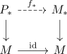
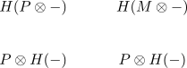
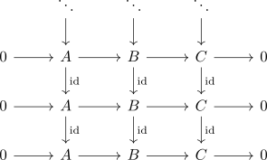
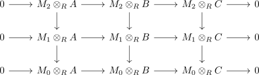
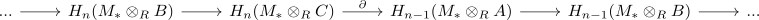
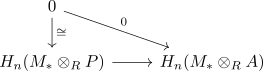

flat resolution lemma
Proposition
Let \(R\) be a ring and $\mathrm{RMod}$ the category RMod Suppose $M_* \rightarrow M$ is a flat resolution, then the Tor Functor evaluates as
Proof
it suffices to show that $H_n(M_* \otimes_R -)$ is a universal delta functor. Then it follows by uniqueness, that $\mathrm{Tor}_n^R(M,-) \cong H_n(M_* \otimes_R -)$
delta functor
Let $A \in \mathrm{Ob}(\mathrm{RMod})$
welldefined
Let $M_* \rightarrow M, M_*' \rightarrow M$ be flat resolutions Then choose a projective resolution $P_* \rightarrow M$.
Then we get an induced morphism

Note that this morphism is a quasi-isomorphism (cf. morphism between acyclic chain complexes as quasi isomorphism)
By tensor product of chain complexes and degreewise flat modules and strong FHHF for exact functors we get a diagram

quasi isomorphism between trivial boundary complexes as isomorphism
$n = 0$
Then we get
by quotient modulo image as coker we get
and as the tensor product $- \otimes_R A$is right exact, it preserves cokernels
here since $M_1 \rightarrow M_0 \rightarrow M \rightarrow 0$ is a resolution we get
construction
Let

be exact.
Then consider the diagram

here each row is short exact. Therefore after applying $M_i \otimes_R -$
we get a diagram

Here all rows are short exact
Therefore by zig-zag lemma for modules there exists a natural boundary map

universal
we use that coeffacable delta functor are universal delta functor:
For $A \in \mathrm{Ob}(\mathrm{RMod})$ choosing a projective module $P \twoheadrightarrow A$, e.g. $R^A \rightarrow A$. Then it follows that
is exact, as $P$ is flat (cf. projective module as flat module)
Therefore
for $n \geq 1$.
Thus
